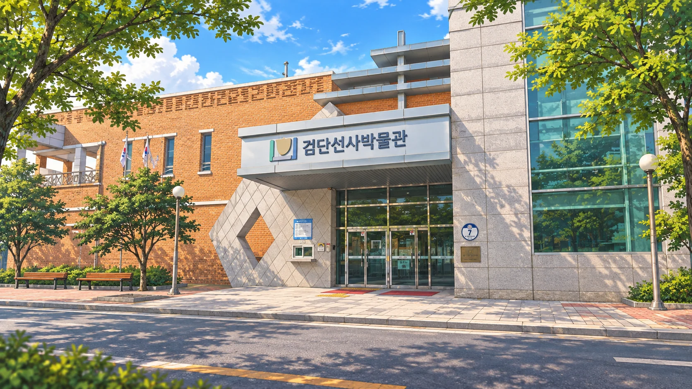

CHAPTER 01 · 서해·검단이번 정류장은
검단선사박물관입니다.
옛사람의 손길이 남은 작은 무늬에서
검단의 수학의 빛을 찾아보세요.

✦
실제 장소를 참고한 창작 일러스트

01 전시실02 집터03 수장고04 토기 공방
빛의 수첩 · 새롭게 나타난 메시지✦
작은 무늬를 따라
한 바퀴의 빛을 이어 주세요.
실제 토기에서 작은 구멍을 찾아보세요.
그리고 우리 토기의 둘레를 재어
같은 간격으로 무늬를 만들어 주세요.
서연 · “한 바퀴 길이를 같은 간격으로 나누면 될 거야.
먼저 유물을 가까이서 관찰해 보자!”
토기 공방 문을 열고 있어요.
잠시 후 실제 유물을 가까이에서 만나요.
LIGHT FOUND · 첫 번째 빛옛사람의 손길을 기억하며
빛의 수첩에 검단선사박물관의 빛을 담고,
민우와 서연이 다시 버스에 올랐어요.
CHAPTER 01 COMPLETE작은 무늬에서 찾은
수학의 빛
유물을 보며 옛사람의 생활을 발견하고,
직접 돌려 한 바퀴의 무늬를 완성했어요.
288 ÷ 18 = 16
생활의 흔적 관찰같은 간격으로 나누기한 바퀴 완성
다음 챕터 · 세어도와 정서진
이제 배를 타고 섬과 노을을 만나러 가요.
저장할 수 없어 이 창에서만 진행됩니다.